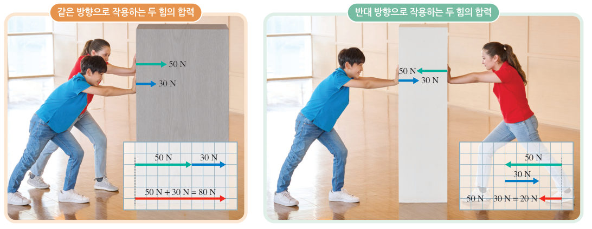
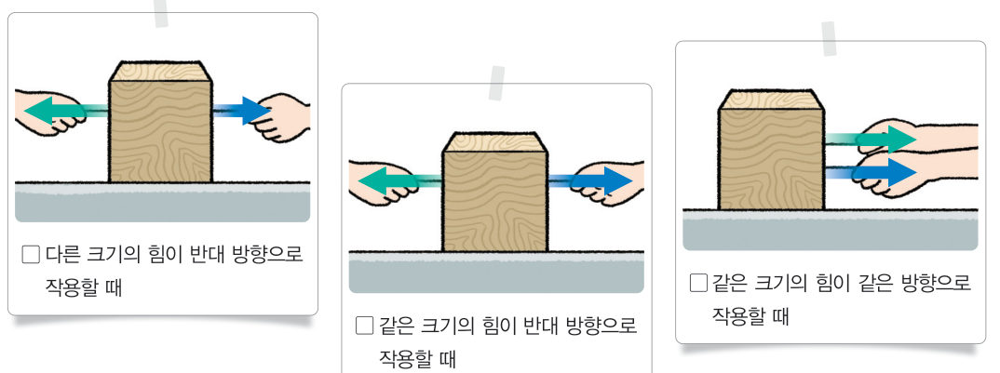
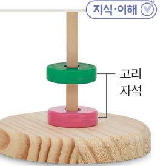

“같이 들자.” “둘이 드니 힘이 덜 드네.” 무거운 짐을 혼자 들 때보다 둘이 들 때 힘이 덜 드는 까닭은 무엇일까? 가상 상자 밀기와 줄다리기로 두 힘의 합력과 힘의 평형을 알아보자.
🎯 이 단원을 배우면 — 물체에 나란한 방향으로 작용하는 힘의 합력을 구하고, 힘이 평형을 이루는 조건을 설명할 수 있다.
교과서물체에 나란하게 작용하는 두 힘은 어떻게 더할 수 있을까? 160쪽
무거운 물체를 두 사람이 함께 밀면 혼자 밀 때보다 쉽게 밀 수 있다. 이는 두 사람의 힘이 합해져서 더 큰 힘이 물체에 작용하기 때문이다. 물체에 둘 이상의 힘이 동시에 작용할 때, 이와 같은 효과를 나타내는 하나의 힘을 합력이라고 한다.
두 힘이 물체에 같은 방향으로 작용하면 그림 5-3과 같이 합력의 크기는 두 힘의 크기를 더한 것과 같다. 이때 합력의 방향은 두 힘의 방향과 같다. 두 힘이 물체에 서로 반대 방향으로 작용하면 합력의 크기는 큰 힘의 크기에서 작은 힘의 크기를 뺀 것과 같다. 이때 합력의 방향은 큰 힘의 방향과 같다.

그림 5-3물체에 나란하게 작용하는 두 힘의 합력
움직이는 그림 5-3두 사람이 상자 밀기
두 학생이 상자에 작용하는 힘의 크기와 방향을 정하고 [밀기]를 눌러 보자. 아래 모눈(1칸 = 10 N)에 두 힘과 합력의 화살표가 그려지고, 상자는 합력의 방향으로 움직여요. (바닥의 마찰은 생각하지 않아요.)
합력의 크기-
합력의 방향-
상자정지
1오른쪽으로 50 N, 오른쪽으로 30 N이 작용하면 합력은 N이고, 오른쪽으로 50 N, 왼쪽으로 30 N이 작용하면 합력은 N, 방향은 이다.
해 보기합력이 0이 되는 조건 찾기 161쪽
힘이 평형을 이루는 조건은 무엇일까?
줄다리기를 할 때 양쪽에서 줄을 당겨도 줄이 움직이지 않을 때가 있다. 이는 줄에 작용하는 힘의 합력이 0이기 때문이다.

161쪽두 힘이 물체에 크기와 방향을 달리하여 작용할 때
1합력이 0인 경우를 골라 보자.
가상 실험줄다리기
양쪽 팀에 학생을 넣거나 빼 보자. 학생마다 당기는 힘이 다르게 적혀 있어요. 줄이 움직이지 않는 경우를 찾아보자!
2줄이 움직이지 않으려면 양쪽 팀이 당기는 힘의 크기가 한다. 이때 줄에 작용하는 합력은 N이다.
교과서힘의 평형 161쪽
물체에 작용하는 두 힘의 합력이 0이면 물체는 아무런 힘을 받지 않는 것처럼 보인다. 이때 두 힘은 힘의 평형을 이룬다고 한다. 물체에 작용하는 두 힘이 평형을 이루려면 두 힘의 크기가 같고, 두 힘이 서로 반대 방향으로 작용해야 한다.
가상 실험공중에 떠 있는 고리 자석

161쪽고리 자석
초록색 고리 자석의 개수를 바꿔 보자. 자석이 무거워질수록 아래 자석에 더 가까이 내려와 미는 힘이 커지고, 두 힘이 같아지는 곳에서 멈춰요.
💭사고력 초록색 고리 자석을 위로 밀어 올리는 힘과 평형을 이루는 힘의 크기와 방향을 설명해 보자.
블록 실험실스쿠버 다이버를 물 아래로!
바닷물 속 다이버에게는 위로 밀어 올리는 힘과 아래로 당기는 힘이 작용해요. 납 벨트(무게추)를 차서 아래로 작용하는 힘을 바꿔 보며, 다이버가 내려가는 조건을 찾아보자.
위로 작용하는 힘-
아래로 작용하는 힘-
합력-
1다이버가 아래로 내려가려면 위로 작용하는 힘보다 아래로 작용하는 힘이 더 한다. 두 힘의 크기가 같으면 다이버는 물속에 .
스스로 확인하기160쪽 학습 목표를 달성했는지 확인해 보자 161쪽
1개념 확인 물체에 작용하는 두 힘이 평형을 이루려면 두 힘의 크기가 ( ), 두 힘이 서로 ( ) 방향으로 작용해야 한다.
🧩 첫 번째 블록 · 힌트 조각 2 (161쪽)
스쿠버 다이버가 아래로 내려가려면 위로 작용하는 힘보다 아래로 작용하는 힘이 더 ( ) 한다.
5분 테스트나란한 두 힘의 합력과 평형
1같은 방향으로 작용하는 두 힘의 합력의 크기는 두 힘의 크기를 것이고, 반대 방향으로 작용하는 두 힘의 합력은 큰 힘의 크기에서 작은 힘의 크기를 것이다.
2책상 위 나무 도막을 양쪽에서 잡아당겼다. 합력의 크기와 나무 도막이 이동하는 방향을 구해 보자.
당긴 힘
합력(N)
방향
④ 오른쪽 10 N, 왼쪽 5 N
⑤ 오른쪽 3 N, 왼쪽 3 N
⑥ 오른쪽 7 N, 왼쪽 13 N
3물체에 작용하는 두 힘의 합력이 이면 두 힘은 힘의 평형을 이룬다. 물체가 정지해 있을 때 힘의 합력은 이다.
스스로 정리하기힘의 합력과 평형 · 첫 번째 블록 찾기 162쪽
2힘의 합력과 평형
(1) : 물체에 둘 이상의 힘이 동시에 작용할 때, 이와 같은 효과를 나타내는 하나의 힘 • 같은 방향: 합력의 방향은 두 힘의 방향과 방향 • 반대 방향: 힘의 방향과 같은 방향 (2) 물체에 작용하는 두 힘의 합력이 0이면 두 힘은 힘의 을/를 이룬다. (3) 힘이 평형을 이루는 조건: 두 힘의 크기가 , 두 힘이 서로 방향으로 작용해야 한다.
🧩 첫 번째 블록 찾기
스쿠버 다이버가 물 아래로 내려갈 수 있는 까닭은 무엇일까?
힌트 조각 — 159쪽: 스쿠버 다이버에게 힘이 작용하면 스쿠버 다이버의 운동 상태가 변한다. / 161쪽: 스쿠버 다이버가 아래로 내려가려면 위로 작용하는 힘보다 아래로 작용하는 힘이 더 커야 한다.
제출학생 정보 · 제출하기
모든 활동을 마친 뒤 제출하면 전체가 한 번에 채점되고 피드백이 나타나요. 답안은 선생님 스프레드시트(중1 탭)에 기록돼요.